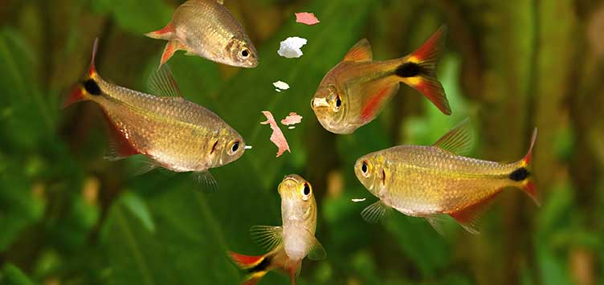
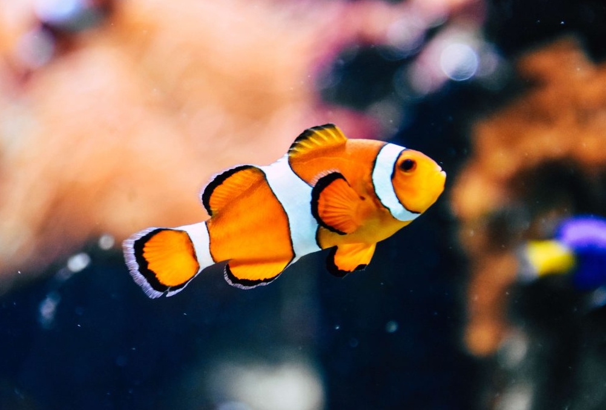

Caring for fish requires more than just feeding them daily. Fish thrive in a well-maintained environment, making it essential to provide a properly sized tank suitable for their species. A reliable filtration system is crucial to keep the water clean and free from harmful toxins, while a heater and thermometer help maintain a stable water temperature. It’s also important to conduct regular water tests to monitor levels of pH, ammonia, nitrite, and nitrate. These elements can significantly affect your fish's health, so keeping them balanced is key. When introducing new fish to your tank, do so gradually to prevent stress and give them time to adjust to their new environment.
Feeding your fish a varied diet of high-quality food is equally important. Each species has different dietary needs, so research their specific requirements. Overfeeding can lead to waste buildup and affect the water quality, so it’s best to feed fish small amounts that they can finish within a few minutes. Additionally, consider providing hiding spots or plants in the tank to mimic a natural environment, as this can reduce stress and improve the fish’s overall well-being. Proper care ensures a healthier and more enjoyable life for your aquatic pets.
Getting a fish is a big decision! Here's a reminder of things to consider before bringing a friend home:
Remember: getting a fish is a long-term commitment! Make sure you're ready to provide a loving and responsible home for your new companion.
Proper nutrition is crucial for the health and well-being of your fish, and a balanced diet that includes a variety of foods such as flakes, pellets, and live or frozen foods can help ensure they receive the necessary nutrients. It's also important to avoid overfeeding, as this can lead to digestive issues and poor water quality, and instead feed your fish only as much as they can consume within a few minutes.
While fish don’t require vet visits like other pets, maintaining proper tank conditions is crucial for their health. Regularly clean the tank, monitor water pH, and keep the temperature stable. Use water conditioners to remove harmful chemicals, and pay attention to signs of illness, such as changes in swimming behavior or color, which might require specialized treatments.
To maintain good water quality, regularly test the water for ammonia, nitrite, and nitrate levels to ensure they are within safe ranges for your fish. Perform regular water changes of about 10-15% every week to remove waste and toxins. This will help keep your fish healthy and prevent water quality issues that can lead to illness or stress.
A safe environment for fish starts with a well-maintained aquarium that is the right size for the species. Ensure the tank is properly filtered, and avoid overcrowding to reduce stress. Use aquarium-safe plants and decorations, and always cycle the water before introducing fish to prevent shock or illness.
Fish don’t play or exercise like other pets, but they still benefit from an engaging environment. Provide plants, rocks, and decorations in their tank to encourage natural behaviors like exploring or hiding. Some species enjoy swimming through obstacles, so adding variety can stimulate their activity.
Fish are low-maintenance pets compared to dogs or cats, but they still need daily monitoring. Checking on their behavior, ensuring proper feeding, and maintaining clean water conditions are vital. Though they don’t need direct interaction, observing and caring for their environment ensures their well-being.
